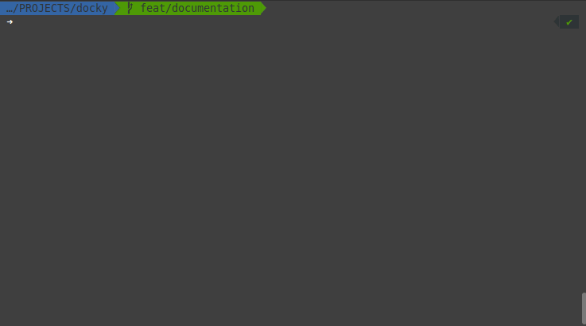

Welcome to Docky’s documentation!
Docky is a Command Line Interface (CLI) tool written in Python (using CLY?!) for running Docker and Docker Compose commands.
Usage
To use Docky in your project, just copy the scripts folder to your project
and add the project’s configuration in scripts/docky_cli/config.py.
You can check Docky help by running:
./scripts/docky.py
You can check a Docky command help by running:
./scripts/docky.py <command> --help
where <command> is one of the commands presented in the Commands section
of Docky help.
To run your project with Docker for development, run:
./scripts/docky.py run
The command will create .env file in project’s root (if it does not already exists),
Build the service’s images (and the images it depends on, if they are not already built),
and then connect to the service’s Container shell.
You can both run the commands inside the Container’s shell
or run each command individually, by running:
./scripts/docky.py run <command>
where <command> can be a command and it’s arguments.